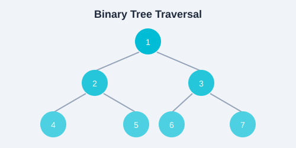

Time complexity measures how the runtime of an algorithm grows as the input size increases. We use asymptotic notation to express this growth in a hardware-independent way. Understanding complexity lets you choose the right algorithm for large datasets.

Big-O describes the worst-case growth rate. f(n) = O(g(n)) means that for sufficiently large n, f(n) is bounded above by a constant multiple of g(n).
| Notation | Name | Example | Feasible for n |
|---|---|---|---|
| O(1) | Constant | Array access, hash lookup | Any size |
| O(log n) | Logarithmic | Binary search, balanced BST | 10â¹+ |
| O(n) | Linear | Linear search, array traversal | ~10â· |
| O(n log n) | Linearithmic | Mergesort, Heapsort | ~10ⶠ|
| O(n²) | Quadratic | Bubble sort, nested loops | ~10â´ |
| O(2â¿) | Exponential | Fibonacci recursion without memo | ~30 |
| O(n!) | Factorial | Brute-force TSP | ~12 |
# O(1)  constant time
def get_first(arr):
return arr[0]
# O(n)  linear time
def linear_search(arr, target):
for i, v in enumerate(arr):
if v == target:
return i
return -1
# O(n^2)  quadratic time
def bubble_sort(arr):
n = len(arr)
for i in range(n):
for j in range(n - i - 1):
if arr[j] > arr[j + 1]:
arr[j], arr[j + 1] = arr[j + 1], arr[j]
# O(log n)  logarithmic time
def binary_search(arr, target):
lo, hi = 0, len(arr) - 1
while lo <= hi:
mid = (lo + hi) // 2
if arr[mid] == target:
return mid
elif arr[mid] < target:
lo = mid + 1
else:
hi = mid - 1
return -1f(n) = Ω(g(n)) means f(n) grows at least as fast as g(n). Describes the best-case scenario.f(n) = Θ(g(n)) means f(n) grows exactly as fast as g(n) (both upper and lower bound match). This is the most precise characterization.A loop that runs n times is O(n). If the loop variable halves each time (e.g., while i > 0: i //= 2), it is O(log n).
Two nested loops each running n times yield O(n²). A loop of n iterations with an inner loop that runs i times yields O(n²) as well (sum of 1 to n is n(n+1)/2).
Recursive algorithms are analyzed using recurrences. For mergesort: T(n) = 2T(n/2) + O(n), which solves to T(n) = O(n log n) via the Master Theorem.
# Fibonacci: O(2^n) naive vs O(n) with DP
def fib_naive(n):
if n <= 1:
return n
return fib_naive(n - 1) + fib_naive(n - 2)
def fib_dp(n):
a, b = 0, 1
for _ in range(n):
a, b = b, a + b
return a| Algorithm | Best | Average | Worst | Space |
|---|---|---|---|---|
| Bubble Sort | O(n) | O(n²) | O(n²) | O(1) |
| Selection Sort | O(n²) | O(n²) | O(n²) | O(1) |
| Insertion Sort | O(n) | O(n²) | O(n²) | O(1) |
| Merge Sort | O(n log n) | O(n log n) | O(n log n) | O(n) |
| Quick Sort | O(n log n) | O(n log n) | O(n²) | O(log n) |
| Heap Sort | O(n log n) | O(n log n) | O(n log n) | O(1) |
| Counting Sort | O(n + k) | O(n + k) | O(n + k) | O(k) |
| Algorithm | Time Complexity | Space |
|---|---|---|
| Linear Search | O(n) | O(1) |
| Binary Search | O(log n) | O(1) |
| BFS / DFS | O(V + E) | O(V) |
| Dijkstra | O((V + E) log V) | O(V) |
| Bellman-Ford | O(V * E) | O(V) |
| Floyd-Warshall | O(V³) | O(V²) |
Space complexity measures the amount of extra memory an algorithm uses. An in-place algorithm uses O(1) extra space (e.g., Bubble Sort). Algorithms that allocate new arrays (e.g., Merge Sort) use O(n) extra space. Recursion adds call stack space  a recursive function that calls itself n times deep uses O(n) stack space.
For each of the following code snippets, determine the time complexity using Big-O:
# Snippet 1
for i in range(n):
for j in range(i, n):
print(i, j)
# Snippet 2
i = n
while i > 0:
print(i)
i //= 2
# Snippet 3
for i in range(n):
for j in range(10):
print(i, j)
# Snippet 4
def mystery(arr):
if len(arr) <= 1:
return arr
mid = len(arr) // 2
left = mystery(arr[:mid])
right = mystery(arr[mid:])
return merge(left, right)Answers: O(n²), O(log n), O(n), O(n log n). Can you explain why?